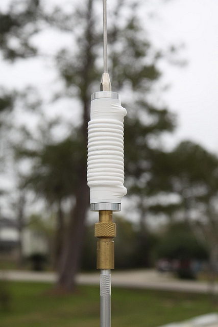
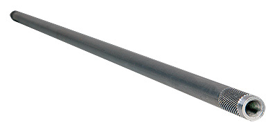
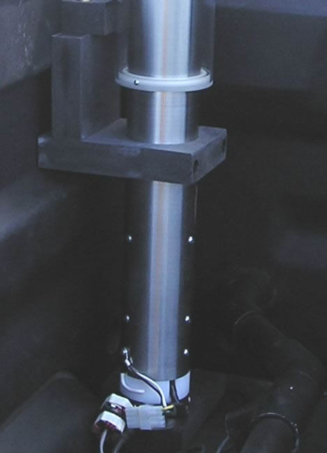
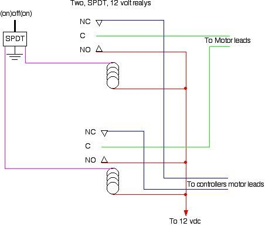
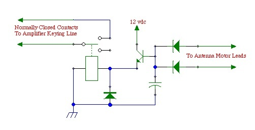
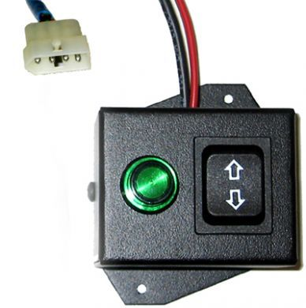
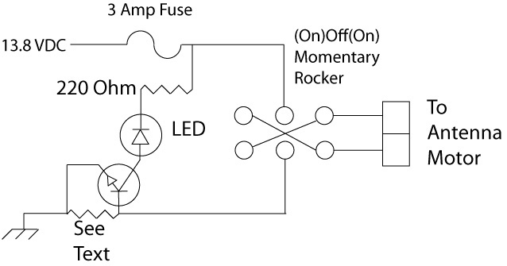
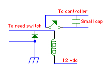
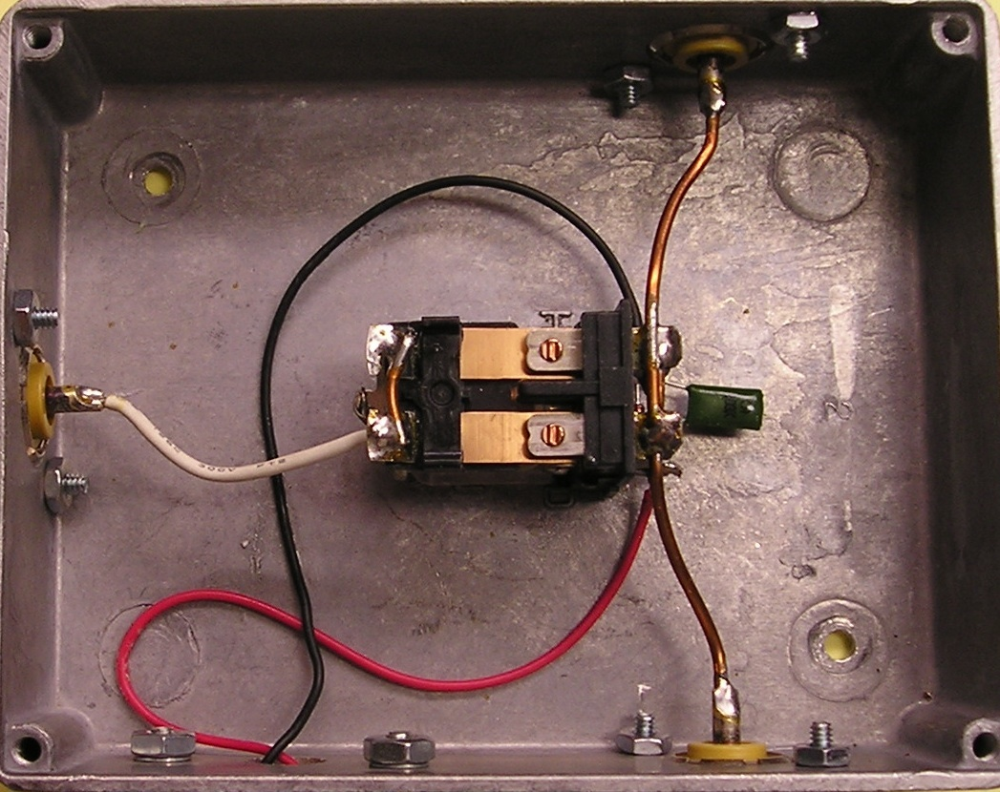
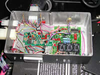

<img> as data-original-src.
Contents: Basics; Suppliers; Basic Antennas; Brewing; Masts; Brackets; Intermission; Manual Override; Amplifier Bypass; The Simple Rocker Switch; Debouncer; Antenna Switch; Amplifier Remote Control; Other Things;
Starting with the dawn of amateur radio, it was the rule (not the exception) to build your own gear, including transmitters, receivers, antennas, amplifiers, and even test gear. As the popularity of radio (in general) grew, manufacturers filled part of the need by supplying receiving gear. Yet, for the most part, antennas and transmitting gear were still home brewed. It wasn't until the early 50s, that manufactures started to fill the (modern) needs of us amateurs.
Transceivers, as we know them today, didn't make the appearance until the latter 50s. By 1965, no less than 10 companies were answering the call. Collins, Heathkit, National Radio, and a myriad of others, started the trend we enjoy today. Unfortunately, along with these changes, retailers specializing in the requisite home brewing parts, have nearly vanished. Radio Shack is a prime example. Once a major supplier of electronic parts, it isn't much more than a cellphone sales office nowadays. Nonetheless, home brewing is not dead, it has just evolved!
While a few can sit down, design and build the gear they need, most have to settle for easier projects. So, what we'll tackle here does require some mechanical and electrical ability, and at least some measure of hand tools. You don't need a drill press, but it would help to have one. You'll need a soldering iron (leave the gun at the door), screwdrivers, needle nose pliers, cutters, and the ubiquitous DVM (digital voltmeter). Of course, if you don't own any of these things, it might behoove you to remain an appliance operator, but that's not the essence of amateur radio!
Antennas on the other hand, require a bit more engineering prowess, and machine tools not normally owned by your average amateur operator. This is especially true when it comes to loading coils. There are some simple workarounds for those who wish to get their feet wet, and you'll find those below.
There are a myriad of links on this site of interest to amateurs, no matter their interests. Since we're talking about building, here are a few sites of specific interest to home brewers, tinkerers, and most amateurs.
Aaron's General Store carries a large stock of both inch and metric sized bolts, nuts, washers, and fasteners. They even have a line of security fasteners of just about every configuration you can think of. If they don't have it, you probably can't find it anywhere.
Circuit Specialties carry a variety of home brew parts, test equipment, soldering stations, power supplies, and more. They're worth a visit even if you don't home brew.
Commerce Metals is a supplier of aluminum and stainless steel rods, tubes, bars, plate, and sheet stock.
Grumpy Shop is another good supplier of esoteric things. If you're a home brewer, they're worth a visit.
Speedy Metals is a supplier of aluminum and stainless steel rods, tubes, and bars.
Metals Depot is also a supplier of aluminum, and stainless steel rods, tubes, and bars.
Micro Fasteners is a great place to visit if you need set screws, and fasteners.
All Electronics, and All Spectrum Electronics, both carry new, used, pulls, and overages of electronic parts, connectors, LEDs, fans, you name it.
Mouser, Newark, and Digikey are all first-line retailers of all things electronic.
Professional Plastics sells all kinds of plastics, and sometimes has remnants for sale for a lot less.
Over the years, I've built dozens of different ones. Most have used commercial parts (modified and raw), some home brew parts, and a few defied description. If I have any regrets, it is that I didn't take pictures of them all.
The basic HF mobile antenna scenario really isn't complicated. You need some sort of mount, a mast, a coil, a whip, and (hopefully) some sort of matching device. The problem is nowadays, you just can't find the individual parts. And when you do, they want your first-born as payment! I'll give you a very good example.
During the late 70s, I worked for CW Electronics in Denver. They were the only amateur radio retailer within 500 miles. We sold just about every kind of amateur radio gear you could name, most of the non-proprietary parts to repair them, the tools to fix them, and everything in between.
One of the requisite parts for any mobile antenna (save for 10 meters) was a loading coil. At the time, the largest manufacturer was B&W (Barker & Williamson). The trade name for their coils was Airdux®. They were made in a variety of lengths and diameters. They ones I liked were the 2000 series. A piece of the 2004T was enough coil to build two 20 meter coils. A piece of 2006T was enough to make a 40 meter loading coil, with enough left over to built a 15 meter one. The cost was less than $8 each. A quick check of their web site will show the current price at $65 each! If you opt for a really good coil, you'd have to use their 4804TL. Which now, incidentally, sells for $500 each! It is no wonder that companies like Texas Bug Catcher opted to wind their own.
What this article is about is where to find the parts to home brew your own. If you wish to call it DIY (Do It Yourself), fine as I don't have an argument about that. What's more, to me at least, it doesn't make any difference what "parts" you use. If you designed it, and it works, it is yours! What's more, there is a big measure of pride that comes from rolling your own.
So what you see here is not so much a home brew how to, but a few links and suggestions that will aid you on your quest. Whatever avenue you take, you need to bone up on antenna design. The first place to start is the ARRL Handbook.
If you want to see the ultimate in home brew antennas, go to the Photo Gallery, and do a search for VE6AB. Jerry Clement, is a first-class machinist, and it is always rewarding to see his work. He's even had an article or two in QST.
Of course, every antenna needs a mount of some sort, and they're listed in the Antenna Mounts article.

The right photo shows the completed coil. The wire used #14 awg, but it looks much bigger. The reason is, David used some nylon rope as a spacer for the coil turns. As long as moisture doesn't get in, that's a good way to keep the turns evenly spaced. The tape is vinyl electrical tape, but Rescue Tape might be a better solution as it seals out moisture better.
One thing to remember if you duplicate this method is to keep the coil turns away from the end bosses to minimize Q losses. The on-line calculator can be used to approximate the required turns needed. You must know that before ordering the requisite length form from Breedlove. All in all, it is a novel idea, one that is easily duplicated, and the completed antenna is certainly full of DIY pride!

You can homebrew your mast too. Mike Brueggemann, K5LXP, has the answer on his web site. For less than $10 you can buy enough material to build two masts using his method. While copper pipe works well, DIY (Do It Yourself) steel tubing will work to. Fact is, the 1/2 inch diameter material is will accept a 3/8 x 24 bolt if you cut off the head. The bolt can be brazed in, along with a nut to tighten it down to. A coat of paint, is all that's needs. If you look in the Photo Gallery under W5LLD, you'll see one of these. This particular mast is 4 feet long, and the loading coil is from an old ARC5.

The dielectric strength of TecaMax®goes beyond 1 GHz, as does Delrin®, and Nylon®. All of them can be worked with normal woodworking tools, and they all drill well except for the snatching mentioned above. However, for holes over 3/8 inch, you should use a Forstner® or spade bit, and go slow! If you thread it, use a bit one number smaller than recommended, and back out often! Don't use fine thread sizes either. In other words, treat it like soft aluminum.
What ever your level of expertise is, a home brew project can bring a lot of satisfaction. Besides, it keeps you out of the spouse's hair for a while.
One often recommended method to check the dielectric strength of an unknown plastic, is to place a sample in the microwave and turn is on for a few seconds. That may indeed work, but you have to be very careful! Some forms of PVC will explode into flames after just a couple of seconds.
What follows are a few, simple electrical projects anyone can build. Obviously you'll need a decent soldering iron (no guns please!), a few simple hand tools, and a little patience. Most can be built dead bug style, or by using perf board. More industrious folks might resort to building their own circuit boards, but that's just butter on the bread in these cases. There are two places you don't want to scrimp on—the mounting box, and the switches.
The aluminum boxes shown below are made by Hammond, and are sold by Digikey, and Mouser. They come is a variety of sizes and finishes. Their cover screws are a standard 8x24, and can be replaced with slightly longer screws to attach mounting brackets.
Digikey and Mouser also sell miniature Switchcraft® switches. While big ugly rocker switches from your local auto parts store will work, neatness counts! Make sure you understand switch nomenclature. The terms, (on)off(on), means the switch is center off, with momentary ons in a DT configurations. For example, the switch shown in the next section is a DPDT—Double Pole, Double Throw—and (on)off(on). There are other configurations, and most catalogs have explanations. Read carefully as it is easy to make a mistake.

You can view the schematic full size by clicking on it. As you can see, it requires two 12 volt relays, and a center off, spring-loaded SPDT switch of some sort. It is straight forward in both wiring, and simplicity. The relays can be almost anything, as the current is seldom over 1 amp. It can be easily built into a box no bigger than 2 inches square. However, there is a caveat worth considering.
Most controllers remember where it was after the last tune. If you then manually move the antenna, and then attempt to use automatic control, there is a chance the controller will move the antenna in the wrong direction. You can either let the controller run, and it will eventually find the right spot.

The two parallel diodes act as an OR gate. If either motor lead has positive 12 volts applied to it, the relay will operate. If the amplifier's PTT line is connected to the normally closed contacts of the SPDT relay, it will be bypassed during the tuning process. The capacitor causes a delay in the relay's release to allow for some jogging during the tuning process.
Just about any 12 volt SPDT relay will work, even a small reed relay. A 2n3904 is a good choice for the switching transistor, and 1n4004 for the diodes. The capacitor's value determines the relay's dropout delay. A 100 uF (≈25 vdc) will give about a 3 to 5 second delay.
This circuit is about as simple as you can make it. The actual time delay relies on the base to emitter leakage value, and that varies with the transistor used. If the delay is too long, a 100 k Ω resistor across the capacitor will solve the problem. Obviously, a larger capacitor will increase the delay, but don't go larger than 1,000 uF. A smaller resistor (if needed) will shorten the delay, but don't go lower than 20 k Ω.
Manual controllers often sell for $70 or more, and basically they're not much more than a DPDT switch. What you see here isn't original, as remote control antennas have been with us for many years. Their circuitry isn't patented; there's nothing special or exotic about them; and you can easily duplicate the effort. How much you spend depends a lot on how fancy you want it to be.
Manual controls have a few drawbacks. One, you have to keep an eye on your SWR readout as you adjust the antenna, The operation is very distracting while you're under way. In some cases, an external SWR bridge or wattmeter is required. This is true of the Icom IC-706 if you trick it into thinking an AH-4 is connected (10 watt carrier), as it takes about 30 watts before the built in SWR meter will operate.
As long as you're willing to put up with these inconveniences, building a manual remote control is very easy. With a little extra work, you can build in an EOT (end of travel) indicator, and for a little more work, you can tell your Icom IC-706 to transmit a 10 watt carrier.

 Power for the unit, and the antenna, comes from the Icom's tuner or accessory port. Icom specs clearly state that the maximum current draw is one amp, which is easily exceeded if the antenna stalls at one end. If the supply is shorted, for whatever reason, a circuit trace will often fail before the internal fuse blows. The controller has an indicator which lights up when the end of travel is reached, but this doesn't eliminate the problem. It can be prevented by using a RigRunner® or similar power block to power the antenna, but does require rewiring the i-Box.
Power for the unit, and the antenna, comes from the Icom's tuner or accessory port. Icom specs clearly state that the maximum current draw is one amp, which is easily exceeded if the antenna stalls at one end. If the supply is shorted, for whatever reason, a circuit trace will often fail before the internal fuse blows. The controller has an indicator which lights up when the end of travel is reached, but this doesn't eliminate the problem. It can be prevented by using a RigRunner® or similar power block to power the antenna, but does require rewiring the i-Box.
Using the 706 version on an Icom IC-7000 isn't something you want to do either. Although the unit will indeed work on a 7000, it stresses an open collector output inside the main CPU, and can cause it to fail. High Sierra® did make a unit for the IC-7000. In that case, the switch not only operated the antenna, it keyed the radio's PTT. You have to switch the radio to the AM mode in order to transmit a carrier in this case. We're going to use this idea, but in a slightly different way.

All of the components can be mounted dead bug style in an aluminum case. If you don't use a RigRunner® to power the unit, rather than use a fuse holder, just use two insulated, 1/4 inch spade lug connectors and an ATC (automotive) fuse. As I stated above, the switch needs to be an (on)off(on), momentary type, but almost any style switch will do. Mouser is a good source for any/all of the components. If you're resourceful, you can build the complete control for less than $15.
Once completed, and wired, simply switch your transceiver to AM or RTTY, push the microphone PTT, and move your antenna with the rocker switch to resonance. Again, this requires you keep an eye on the radio's (or external) SWR readout, so you should avoid tuning the antenna when underway. If the LED lights, it means you've reached the end of travel for that direction. You could also use a piezo beeper in place of, or in parallel with, the LED as an audio indicator.

The schematic shown left elongates, and debounces the pulse. The size of the capacitor varies depending on the controller, but usually a .5 uF or 1.0 uF is large enough. You don't want one too big or the count will be missed altogether. Just about any small, 12 volt, low power relay can be used. You should select one with a coil current of less than 200 mils. The diode can be just about any 1 amp power diode; 1N4008 for example.
You'll need small box to put it in, and a few other minor hardware items, but your miscount problem will be solved. This assumes, of course, that you have properly choked the common mode from both the control cable, and the coax.
Modern mobile transceivers are often referred to as DC to daylight radios, because they usually cover 160 meters through 70 centimeters. Being as small as they are, there isn't a whole lot of room for antenna connectors. Quite often, the output connections are on dongles; the Kenwood TS-480 is a good example. In most cases, only two connections are provided. One for 160 through 6 meters, the other for V/UHF. If you use separate antennas for VHF and UHF, diplexers are available to split the one port into two. However, if you use a separate antenna for the HF bands, and another for 6 meters as I do, you need an antenna switch. This begs the question, what do you do if you're transceiver is remotely mounted? You can buy 12 volt powered, remote antenna switches like the MFJ-4712 ($80), but you will need to modify it for mobile use. The solution is to make one, and if you're frugal, it'll cost you about $20.

 The box is Hammond cast aluminum one, about 3x4x2, although just about any aluminum or steel box could be used. The relay is a DPDT, removed from its plastic enclosure, and screwed into the bottom of the box. The flexible white wire (the common connection) originally connected to a terminal on the opposite end of the relay. The poles were wired in parallel, and to the output SO239s with short pieces of #14 copper wire. All of this was done to keep the insertion losses low. Even then, the throughput SWR rises slightly (1.2:1 at 54 MHz).
The box is Hammond cast aluminum one, about 3x4x2, although just about any aluminum or steel box could be used. The relay is a DPDT, removed from its plastic enclosure, and screwed into the bottom of the box. The flexible white wire (the common connection) originally connected to a terminal on the opposite end of the relay. The poles were wired in parallel, and to the output SO239s with short pieces of #14 copper wire. All of this was done to keep the insertion losses low. Even then, the throughput SWR rises slightly (1.2:1 at 54 MHz).
If you look closely at the expanded photo, you'll notice a diode and small cap attached across the coil terminals. These are added to eliminate the back EMF when the switch is turned off, so connection polarity is important. Power is fed to the switch from a front mounted control panel, shown at right.
Note that the leads shown in the photo above left, are a bit too long. About half the length would be better. Overly long leads cause the insertion losses to go up, which increases the SWR on the higher bands.
 There's a little more behind the SG500 remote control shown in the photo above right, and a full explanation is in the Amplifier article. At right is the schematic.
There's a little more behind the SG500 remote control shown in the photo above right, and a full explanation is in the Amplifier article. At right is the schematic.
 The front mounted switch (left in the upper right photo) is the amplifier control switch depicted graphically in the schematic. The violet LED is the power on indication. If it goes out and the switch is on, it means you've over-driven the amplifier.
The front mounted switch (left in the upper right photo) is the amplifier control switch depicted graphically in the schematic. The violet LED is the power on indication. If it goes out and the switch is on, it means you've over-driven the amplifier.
The rear switch is a DPDT (OnOffOn), and has two functions. When the switch is forward, all systems are off. When the switch is in the center position as shown, it activates the video coming from the Icom IC-7000, and applies it to the TVandNav2Go video converter. When it is moved to the rear position, it also activates the aforementioned remote antenna switch.
There's a lot more to this remote control than meets the eye. It also brings power to the passenger cabin to power the voltmeter. The interconnecting cable is a 12 conductor, #20, with shield. While overkill, it allows room for future additions. There are Molex connectors on both ends for ease of installation. It should be noted that powering the radio, amplifier, and the ancillary devices from the same power and grounding source eliminates ground loop problems.
By the way, the video converter isn't really needed, as there is a way to feed composite video directly to the Navi unit if it doesn't have a backup camera included. However, it requires tricking the Navi into thinking the vehicle is in reverse, which requires tapping into existing wiring. The converter does have an extra benefit, however. There are actually two inputs, so you can add a backup camera if you wish. Or, you could hook up a DVD player, albeit illegal while underway.
Whether you opt for SGC's factory-built remote control (or you build one), there is one important caveat. Power for the remote control is taken from a four pin header plug. Pin four of that header plug is supply voltage. Although that pin is protected by an internal 5 amp fuse, if you short the pin to ground, a circuit trace will fail before the fuse opens! Thus, extra care needs to be taken to make sure this pin is not shorted to ground as the repair is both tedious, and time consuming. It's expensive too if the factory does the work!

Out of the photo, and behind the amplifier is the main body of the IC-7000, which is bolted to the SG500's optional cooling fan assembly. The complete package is held to the trunk floor by two brackets. Remove the bracket hold down knob nuts, 8 connectors (two coax, three Molex, Icom remote cable, and two 120 amp PowerPoles), and the whole assembly can be removed, and set on the work bench in less than a minute.
Before you start tearing your stuff apart to rebox it, you need to know a few things. First, the warranty is gone! You'll need schematics (not always an easy thing to find), a DVM, more than a simple electronics background, and the necessary hand and power tools. Cost is also an object. The box, its innards, the various connectors, Zener diodes (meter protection), caps, and hardware all come to about $350. If it doesn't do anything else of benefit, it is convenient when service is required.
{kind=link}
{kind=link}
{kind=link}
{kind=link}
{kind=link}
{kind=link}